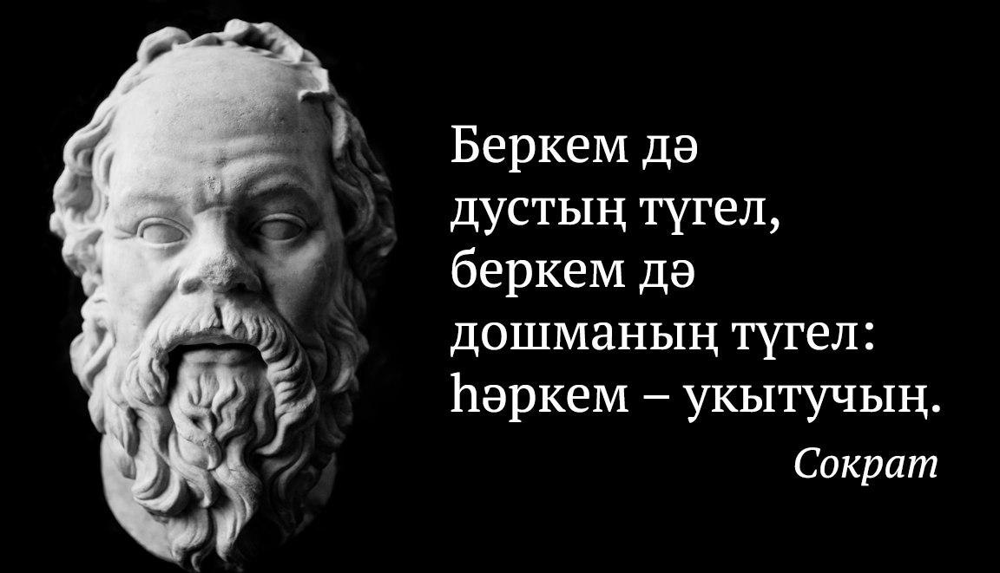

Әлеге мәдрәсәдә ТАССРның беренче авыл хуҗалыгы наркомы Юныс Вәлиди белем ала. 1911 нче елда Русия хөкүмәтенә каршы фикер таратуда һәм панисламизмда гаепләнеп, мәдрәсә яптырыла.
#Гыйлем #тарих@gylem #миллимәгариф@gylem #мәгариф@gylem


АКТАНЫШТАН - ЯҢАРЫШКА :
Респубиканың заманча полилингваль комплекслары Актаныш гимназиясе үрнәгендә төзеләчәк
Якын киләчәктә, ягъни алдагы өч-дүрт елда Татарстанда алты полилингваль комплекс сафка басар дип көтелә. Аларның эшчәнеге рус һәм татар телләрендә, шулай ук халыкара инглиз телендә көндәш булырлык белем бирүне тәэмин итүгә, нәтиҗәле белем бирү тәҗрибәләрен куллануга йөз тотачак.
http://aktanysh-rt.ru/news/tema-dnya/apksvnrlaml
#гимназияактаныш #юнеско